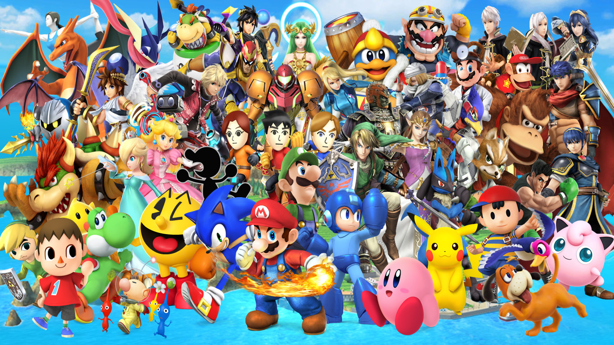

Lo que empezo siendo un fontanero saltando barriles de un gorilla gigante para rescatar a su novia, se convirtio en la figura mas iconica del mundo de los videojuegos, y es que este fontanero en serio marco infancias, y se volvio la figura iconica de la compañia Nintntendo. Fue tal su fama que es gracias a el que le debemos que existan hoy en dia personajes como Sonic o Crash (personajes originalmente hechos ora competir con mario).
El videojuego shooter con mayor alcance en el mundo, pudiendose jugar hasta en una prueba de embarazo(no es chiste), fue uno de los priemros shooters de todos los tiempos, y por mucho tiempo el mayor exponente del genero, siendo reconocida por su humor sangriento y bizarro.
La saga de videojuegos de zombies mas terrorifica de todos los tiempos, resident evil realmente sabia como colocarnos en un ambiente en el cual los enemigos no eran lo mas aterrador, sino saber que estabamos siendo acechados en todo momento, realmente causo terror en sus jugadores, siendo recordado con carño por sus jugadores.
Minecraft fue sin duda el juego que mayor imaginacion a fomentado de todos los demas juegos, convirtiendose en una joyita de internet, y reuniendo millones de jugadores en todo el mundo a explotar su creatividad en este creador de mundos, minecraft te inspiraba a usar las herramientas que te daban y construir el monumento de tus sueños con tus propias manos
El juego de peleas de mortal kombat, siempre se caracterizo por su gran variedad de personajes interesantes, pero sobre todo fue un completo giro ver un juego de peleas que se animara a ser tan "brutal", teniendo juegos en ese tiempo como "street fighter" ni siquiera ellos se atrevian a incluir ni una sola gota de sangre, pero mortal kombat siendo el antisistema qeu es, y eso y mucho mas, y contrariamente a lo que se creia, esto atrajo hasta al publico infantil.
La franquisia de pokemon, siempre a sido unida a su publico infantil, y no es una sorpresa verlo en esta lista, su caracteristicas criaturitas cautivaron al mundo entero, era cuestion de tiempo para que salieran videojuegos que eamoraron a sus fanaticos (aunque en este caso son dos versiones del mismo juego)